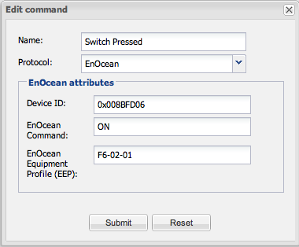

Hi,
I'm having a lot of fun with my EnOcean starter kit. For ECO+PTM330 I have a question. It has two positions, when I switch it into position one then I see in the log:
2013-05-18 13:44:50,244 TRACE [EnOcean serial port reader]: Received serial data from [COM port: /dev/ttyUSB1, Protocol: ESP3, Communication Layer: RXTX] : 0x55 0x00 0x07 0x07 0x01 2013-05-18 13:44:50,248 TRACE [EnOcean serial port reader]: Received serial data from [COM port: /dev/ttyUSB1, Protocol: ESP3, Communication Layer: RXTX] : 0x7A 0xF6 0x00 0x00 0x8B 0xFD 0x06 0x20 0x01 0xFF 0xFF 0xFF 0xFF 0x4D 0x00 0x1F 2013-05-18 13:44:50,250 DEBUG [EnOcean serial port reader]: Received radio telegram : [RADIO: RORG=RPS, sender ID=0x008BFD06, payload=0x00, status=0x20] 2013-05-18 13:44:50,253 TRACE [ESP processor listener executor]: Processed ROCKER_AI, received ROCKER_AI 2013-05-18 13:44:50,254 TRACE [ESP processor listener executor]: Processed ROCKER_AI, received ROCKER_AI
When I switch it to opposite then this is shown:
2013-05-18 13:43:32,575 TRACE [EnOcean serial port reader]: Received serial data from [COM port: /dev/ttyUSB1, Protocol: ESP3, Communication Layer: RXTX] : 0x55 2013-05-18 13:43:32,581 TRACE [EnOcean serial port reader]: Received serial data from [COM port: /dev/ttyUSB1, Protocol: ESP3, Communication Layer: RXTX] : 0x00 0x07 0x07 0x01 0x7A 0xF6 0x10 0x00 0x8B 0xFD 0x06 0x20 0x01 0xFF 0xFF 0xFF 0xFF 2013-05-18 13:43:32,584 TRACE [EnOcean serial port reader]: Received serial data from [COM port: /dev/ttyUSB1, Protocol: ESP3, Communication Layer: RXTX] : 0x50 0x00 0xDE 2013-05-18 13:43:32,586 DEBUG [EnOcean serial port reader]: Received radio telegram : [RADIO: RORG=RPS, sender ID=0x008BFD06, payload=0x10, status=0x20] 2013-05-18 13:43:32,588 TRACE [ESP processor listener executor]: Processed ROCKER_AI, received ROCKER_AI 2013-05-18 13:43:32,590 TRACE [ESP processor listener executor]: Processed ROCKER_AI, received ROCKER_AI
As you can see, the difference is in payload.
I've created two commands:

Linked with two custom sensors and then put two labels corresponding to these sensors. When I put the switch in the first position both labels are 'N/A'. When I switch it to the second position then both labels become 'ROCKER_AI'. This is not what I want to achieve. I want that one label reacts to the first switch position and the other to the second. How can I achieve this?
{kind=link}
{kind=link}
|
See http://www.openremote.org/display/forums/Cannot+find+EnOcean-Controller for how to receive the status of an EnOcean switch. |
|
Hi Rainer, I've studied this page already for a long time and tried everything. Nothing works for me with this device. PTM200 is OK though, so I think that the problem is only with the PTM330. |
|
After studying the ESK 300 documentation I think that the ECO200+PTM330 combination of the ESK 300 is not a finished product related to the F6-02-01 profile. A finished product would at least need two buttons. The ECO200+PTM330 behaves as if you press and release always the bottom left rocker of a regular PTM 210 based switch. |
|
Actually, I would like to have events generated for both, button press and button release actions. This way it would be possible to program different commands based on short or long presses. Just like the Apple remote are working. Right now it is not possible to mimic the Apple remote with OpenRemote which is a pity |
|
Theoretically it would be possible to introduce new commands like STATUS_ROCKER_AI_PRESS, STATUS_ROCKER_AI_RELEASE, STATUS_ROCKER_AO_PRESS. I'll think about it. |
|
Yes, this is what I really need for my application. Can you point me where I can make local changes in the source to add this commands so I can test it before you'll decide whether you add these or not? |
|
New commands (see enum CommandType) have to be added to the the Java class EepF60201 (.../protocol/enocean/profile/EepF60201.java). |